MuhammadTalha
Ph.D. Candidate
Michigan State UniversityResearch Intern, Oak Ridge National Laboratory
Learning Transferable Basin and River-Network Representations for Hydrologic Prediction Across Space and Time
How we represent a basin decides whether a model generalizes
Interview Seminar
Good morning, and thank you for having me. I'm Muhammad Talha, a Ph.D. candidate at Michigan State in a dual program in computer science and biosystems and agricultural engineering, and I've spent this year as a research intern here at ORNL.
Today's talk ties together four projects. [click] The common thread is one idea: in hydrologic machine learning, the way we represent a river basin decides whether a model generalizes, both to future years and to places we have never measured.
I'll show four representations: a basin as a spatial field, as a standardized tensor, as a compact learned vector, and finally as a directed river network. Each answers a limit of the one before it.
Let me start with the roadmap.
Content
Academic Background
Research Overview
Literature Review
Completed
Study 1: Static-Dynamic Fusion
Study 2: BASINGRID Data
Study 3: Basin2Vec Embeddings
Ongoing
Study 4: Graph River Network
Future Roadmap at ORNL
Conclusion
Here's the plan. I'll begin with a short academic background, then an overview of my research and the idea that ties it together: how we represent a basin decides whether a model generalizes, followed by a literature review.
Then four studies. The first three are completed, shown in green. Study 1 is static-dynamic fusion, which became HydroTransformer. Study 2 is BASINGRID, a national dataset. Study 3 is Basin2Vec, compact learned embeddings.
Study 4, in blue, is ongoing work from my internship here at ORNL: a graph neural network over the full river network of the Tennessee River Basin. That's the centerpiece, and I'll spend the most time on it.
I'll close with a roadmap for where I'd take this at ORNL, and a conclusion. First, why streamflow matters.
Academic Background
University of Engineering and Technology, Lahore(2017-2021)
- B.S. Computer Science
Michigan State University(2023-Present)
- Dual Ph. D.
Computer Science (advised by Dr. Pang-Ning Tan)
Biosystems and Agriculture Engineering (advised by Dr. A. Pouyan Nejadhashemi)
Let me start with my academic background. I did my B.S. in Computer Science at the University of Engineering and Technology in Lahore, from 2017 to 2021. That's where I built my foundation in algorithms, machine learning, and software.
In 2023 I started my Ph.D. at Michigan State University, and it's a dual Ph.D. in two departments. In Computer Science I'm advised by Dr. Pang-Ning Tan, and in Biosystems and Agricultural Engineering by Dr. A. Pouyan Nejadhashemi.
The dual program is why this work sits where it does, between machine learning and hydrology: the methods come from computer science, and the questions come from water resources. This year I've also been a research intern here at ORNL, working on the river-network model I'll show later.
Now, an overview of the research.
Research Overview
Now, an overview of my research. I'll start from the problem rather than the methods.
Streamflow underlies flood warnings, water supply, and agriculture, yet we can only measure it at a tiny fraction of river reaches. So the research question is how a model can predict where nobody measures.
My answer, across four studies, is that how we represent the basin decides whether a model generalizes, both to future years and to places it has never seen.
Each study changes the representation, and each answers a limit of the one before it. First I'll set up the motivation, starting with what streamflow is and why it matters.
Motivation: Streamflow, what it is and why it matters
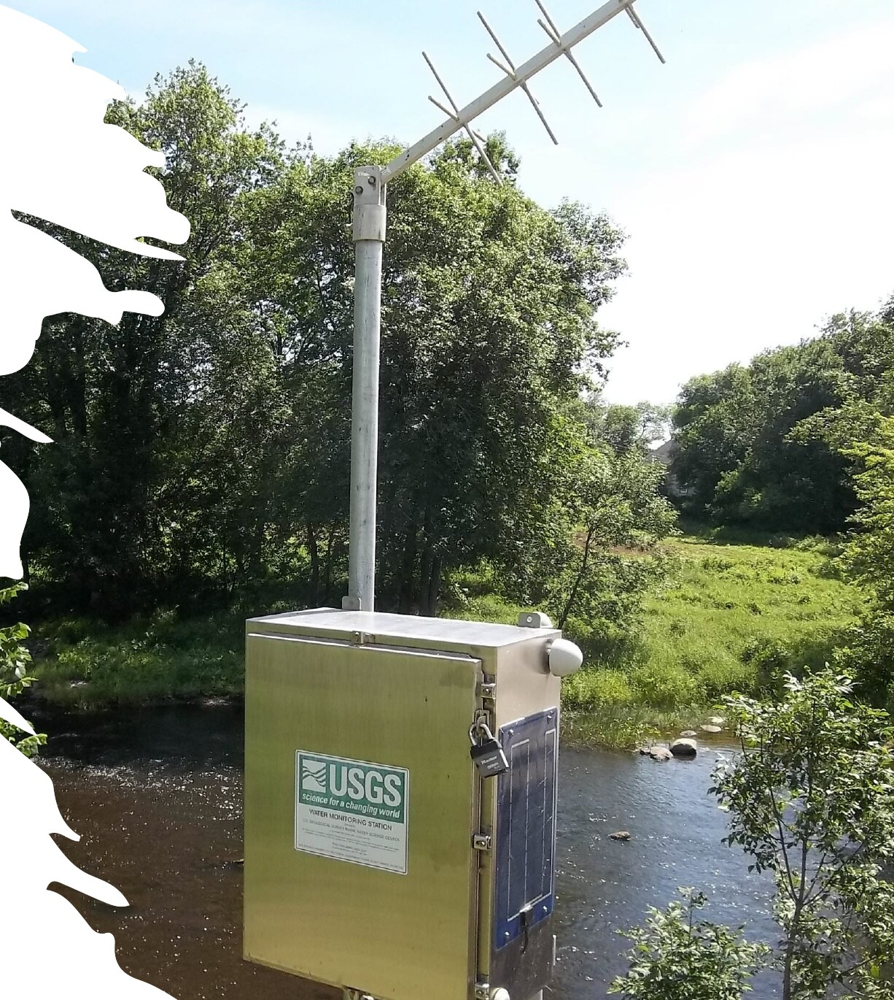
Streamflow is the volume of water moving through a river at a particular location over time.
Public safety Flood warning, drought response, emergency planning Agriculture & water supply Irrigation demand, reservoir operation, water allocation Ecosystems & infrastructure Environmental flows, design standards, climate adaptation
NOAA reports losses of approximately $367.5 billion from drought and $203.0 billion from inland flooding over 1980–2024.
Reliable streamflow information supports decisions under both water excess and scarcity .
Streamflow is simply the volume of water moving past a point in a river over time. It sounds narrow, but it sits underneath a lot of decisions.
[click] It drives flood warnings and drought response. [click] It decides how reservoirs are operated and how irrigation water is allocated. [click] And it sets environmental flows and design standards for bridges and culverts.
[click] The stakes are large. NOAA's billion-dollar disaster records put losses at roughly 367.5 billion dollars from drought and 203 billion dollars from inland flooding between 1980 and 2024. So we need reliable streamflow information on both ends, too much water and too little.
The obvious answer would be to measure it everywhere. Let's look at why we can't.
Motivation: The gauge gap
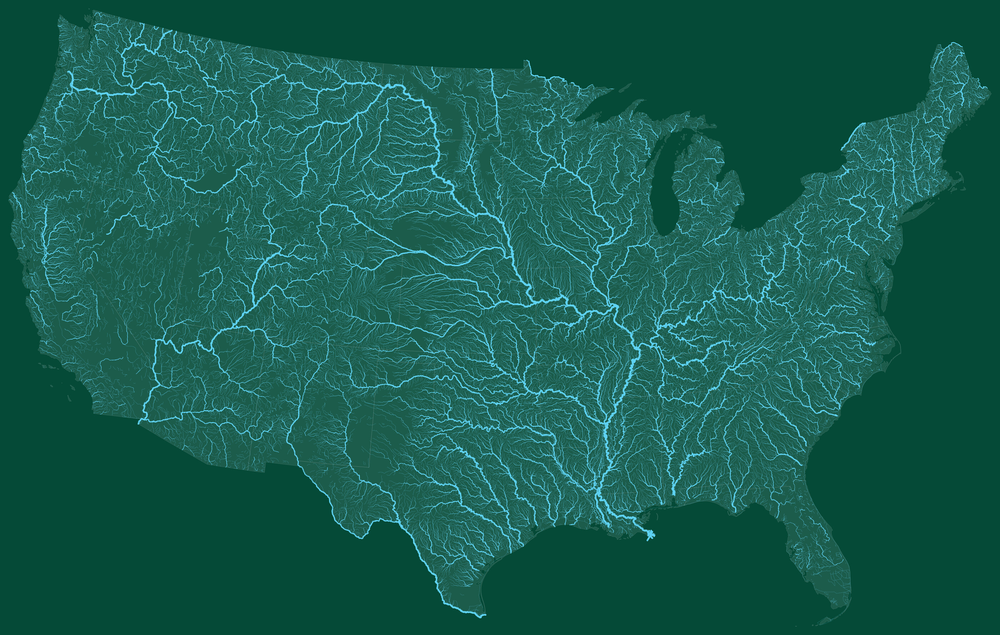
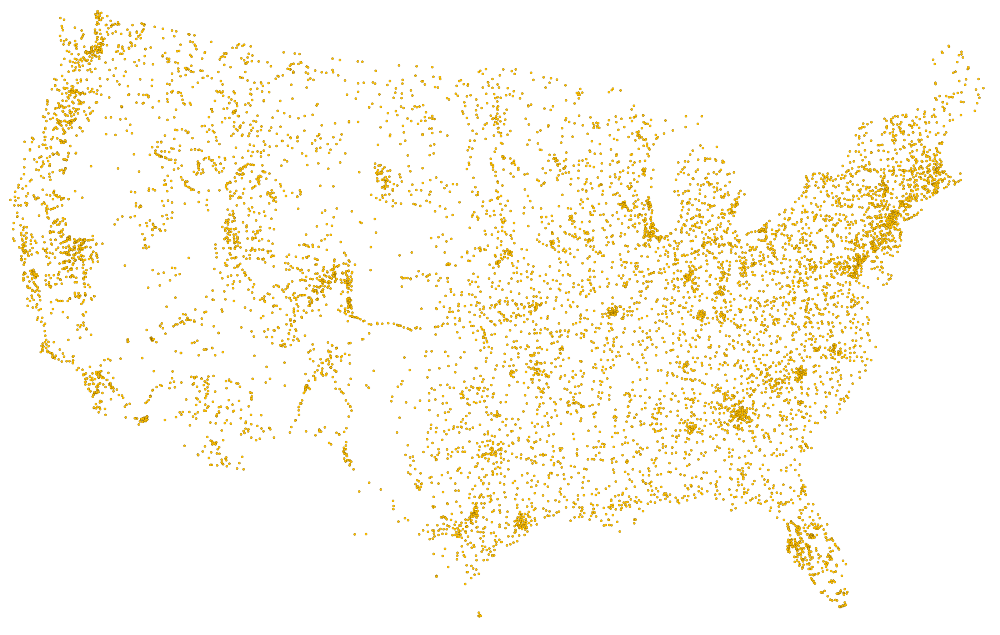
2.7 Million+River reaches across the CONUS
~12 k Federal priority streamgage locations
~5 k Inactive gauges due to lack of funds
Gauges cannot observe every reach. Models must predict where we do not measure.
Rivers: USGS National Atlas 1:1M hydrography (lower 48). Gauges: USGS NWIS active stream sites reporting daily discharge, retrieved Nov 2026. Albers equal-area projection.
This is the river network of the contiguous U.S., drawn from USGS hydrography: more than 2.7 million river reaches in the full national dataset.
[click] Against that, the USGS has roughly twelve thousand federal priority streamgage locations. The yellow dots are the 9,536 gauges that are active today and report daily discharge. Notice how much of the blue network sits far from any yellow dot.
[click] And roughly five thousand gauges are inactive because of funding. Even a well-funded national network can only sample a tiny fraction of the river system.
[click] So the practical question is not how to measure more, but how to predict well where we don't measure. That's a modeling problem, and specifically a generalization problem.
Next: is monitoring enough on its own?
Monitoring is essential!
but gauge measurements cannot directly observe every part of the national river network.
That's why streamflow modeling is needed
Monitoring is essential, and the USGS network behind that last map is genuinely valuable: decades of careful, maintained observation.
[click] But gauge measurements cannot directly observe every part of the national river network. A fixed network, however well funded, only ever samples a tiny fraction of the reaches that matter for flood warning, water supply, and ecosystem health. That's the gap the last slide showed in numbers; this is the same gap stated as a principle.
[click] That's why streamflow modeling is needed: a model has to fill in what a fixed gauge network structurally cannot measure, at every reach, not just the ones with a sensor. So the next question is how such a model actually works, and what choices go into building one.
How is streamflow modeled?
Three broad model families represent the rainfall–runoff relationship in different ways.
1. Conceptual models
Simplified representation of watershed stores and fluxes.
Hydrologically interpretable Simple structure, efficient to run Works with relatively limited data Processes are simplified Requires calibration for each basin Limited ability to represent spatial variability
Examples: HBV, SAC-SMA, Xinanjiang, GR4J
2. Process-based models
Explicit representation of physical processes across the watershed.
Physically based and interpretable Captures spatial and temporal processes in detail Can simulate many variables beyond streamflow Data intensive (inputs & parameters) Computationally expensive Difficult to calibrate and transfer across many basins
Examples: SWAT, VIC, MIKE SHE, HYPE, TOPKAPI
3. Data-driven models
Learn the forcing–streamflow relationship from observed data.
Strong predictive performance Learns complex, nonlinear relationships Shares information across many basins (regional learning) Less interpretable Performance depends on quality of data and representation May extrapolate poorly outside training regimes
Examples: LSTM, EA-LSTM, GRU, Transformers, GNNs
Takeaway: Model family describes how the rainfall–runoff relationship is represented.
Three broad model families represent the rainfall-runoff relationship in different ways.
[click] Conceptual models give a simplified representation of watershed stores and fluxes: efficient to run, interpretable, but limited in spatial detail. Think HBV or SAC-SMA.
[click] Process-based models give an explicit representation of physical processes across the watershed: physically interpretable, but data-intensive and expensive to calibrate and transfer. SWAT is the classic example.
[click] Data-driven models learn the forcing-streamflow relationship directly from observed data: strong performance, shared learning across basins, but less interpretable. This is where LSTMs, GNNs, and Transformers live, and it's where my work sits.
[click] The takeaway: model family describes how the rainfall-runoff relationship is represented. It's independent of two other choices: the spatial setting, lumped versus distributed, and the generalization task, temporal versus spatial. That separation is exactly why I can hold the model family fixed later and vary only the representation.
Modeling streamflow requires data.
dynamic and static
Modeling streamflow requires data, and it's worth being precise about what kind, because the rest of the talk turns on this distinction.
[click] The first axis is data type: dynamic variables that change over time, like precipitation and temperature, and static variables that describe the basin itself and stay fixed, like terrain and soils. Every model family I just showed, conceptual, process-based, or data-driven, takes some mix of both as input; what differs between them is how that mix is processed, not what goes in.
Before I get to the second axis, data representation, let me show concretely what those dynamic and static variables actually are, so the distinction isn't abstract.
Data Types
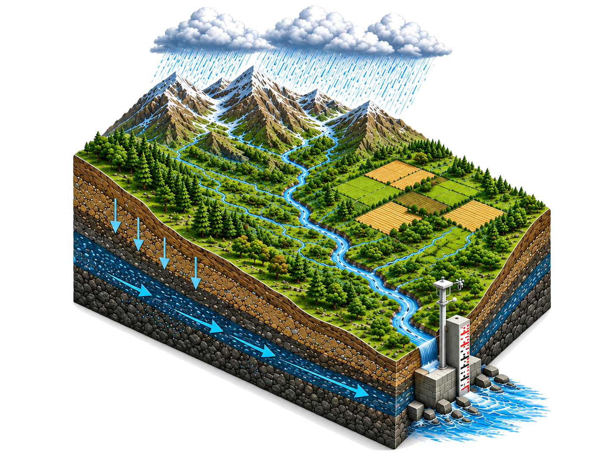
DYNAMIC VARIABLES(vary over time)
Precipitation rainfall, snow
Temperature min / max air temperature
Solar radiation shortwave, day length
…
STATIC VARIABLES(do not vary over time)
Land cover vegetation, crops
Drainage network river topology
Hydrologic properties porosity, Ksat , AWC
…
OBSERVED OUTPUTOutlet discharge
Discharge
Time
Dynamic variables drive the hydrologic cycleinputs that change over time
Static variables define catchment characteristicsinputs that remain constant
Here's a basin, schematically: rain and snow over the mountains, water infiltrating through soil to groundwater, flowing through forest and farmland to a gauge at the outlet.
[click] Dynamic variables drive the hydrologic cycle: precipitation, temperature, wind speed, humidity, air pressure, solar radiation. These change every day, sometimes every hour.
[click] Static variables define the catchment's characteristics: terrain, soils, land cover, the drainage network itself, geology, hydrologic properties like porosity. These stay fixed for a given basin, which is exactly why a lumped vector can summarize them, at the cost of losing where they sit in space.
[click] Together, dynamic variables change the hydrologic cycle and static variables define the catchment that cycle runs through. A model needs both. Now, the second distinction: how we represent them spatially.
Modeling streamflow requires data.
dynamic and static
lumped and distributed
So modeling streamflow requires data along two independent axes, and I want both on screen together before moving on.
[click] First, data type: dynamic and static, which I just walked through with the basin illustration.
[click] Second, data representation: lumped and distributed. That's the choice that decides whether those static and dynamic variables get collapsed into a single averaged vector per basin, or kept as spatially distributed fields. Data type and data representation are independent choices, and conflating them is a common source of confusion. That second axis, representation, is the thesis of this talk, so let me show what each option actually looks like.
Motivation: Lumped vs. distributed basin representations
Lumped Representation
Benefits
Compact Scalable Easy to use Limitations
Spatial heterogeneity lost Local process information removed Drainage connectivity simplified
Distributed Representation
Benefits
Spatially rich Retains basin geometry Keeps drainage structure Limitations
Hard to align across sources Expensive to process and store Hard to scale and standardize
Trade-off
Representation must balance compact with distributed spatial information .
The key choice is how to represent the basin.
The standard large-sample approach is lumped: average everything over the basin into a single feature vector, area, mean precipitation, mean slope, forest fraction, soil texture. It's compact, scalable, and easy to use, but it throws away spatial heterogeneity: where rain falls relative to the outlet, where the steep slopes and the clay soils are.
[click] The alternative keeps the basin distributed as gridded fields: precipitation, topography, land cover, and the stream network, all on a common grid. It's spatially rich and keeps geometry and drainage structure, but it's hard to align across sources and expensive to store and process.
[click] So there's a real trade-off between the two.
[click] Representation has to balance compact with spatially faithful, and that tension runs through the whole talk. Before choosing, we need to define what "works" means.
Motivation: Two tests of generalization, time and space
Temporal: same basins, future period 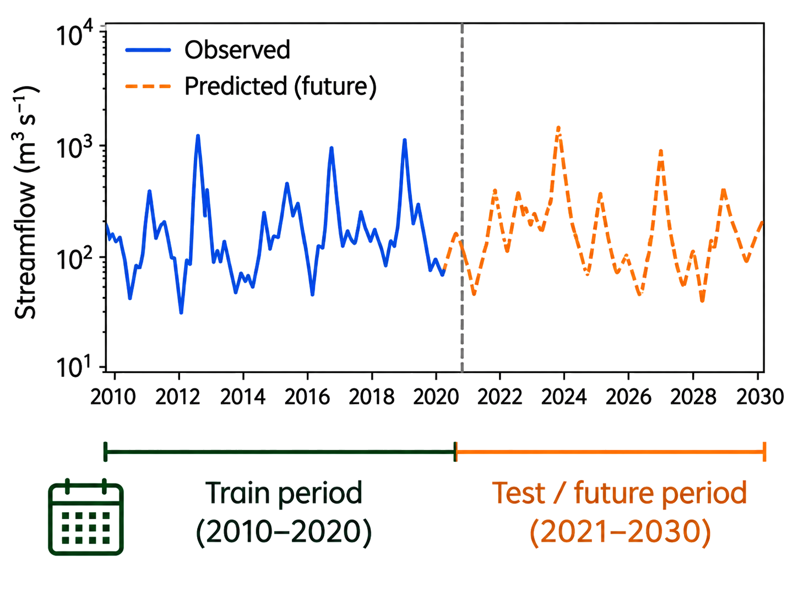
Spatial: basins or gauges never seen 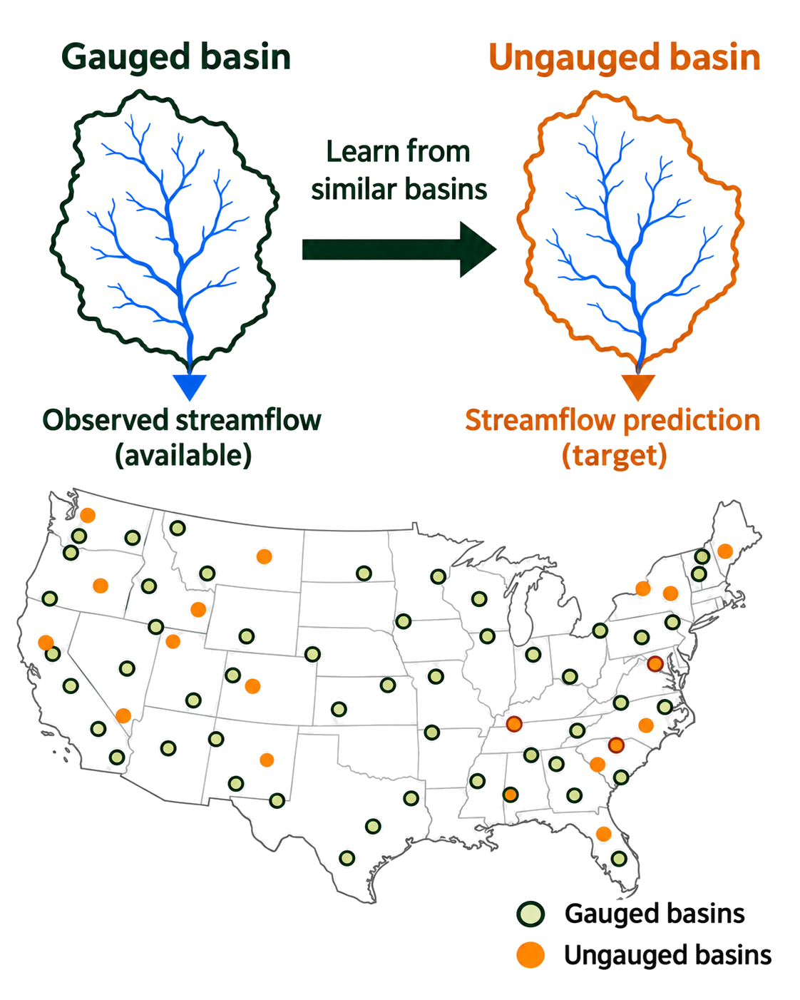
Thesis: how we represent a basin decides whether a model generalizes.
Throughout the talk, every study reports the same two tests, and I'll keep the same colors and icons for them.
Blue, with the clock, is temporal generalization: we train on some years in a set of basins and test on later years in the same basins. That's the easier test, because the model has seen those basins' behavior.
[click] Amber, with the pin, is spatial generalization: we test on basins, or later gauges, whose discharge was never used in training. That's the setting that matches the gauge gap, and it's where models usually fall apart.
[click] My thesis is the line at the bottom: how we represent the basin decides whether a model passes these tests, especially the spatial one. Let me show you the four representations I'll compare.
Literature Review: What has been done, what limits it, what is missing
Hydrologic Modeling at Scale
Large-Sample Datasets
Transferability
What has been done
Mostly lumped basin representations LSTM, EA-LSTM Kratzert et al. 2018, 2019; Addor et al. 2017
Standardized basin-averaged forcing and catchment attributes CAMELS, Caravan Addor et al. 2017; Linke et al. 2019; Kratzert et al. 2023
Earth-observation models learn compact representations from imagery and geospatial data AlphaEarth, SatCLIP Brown et al. 2025; Li et al. 2022; Bassi et al. 2024
Limitation
Internal spatial support removed. Static and dynamic information combined by simple fusion.
Distributed variables stay heterogeneous: inconsistent resolution and projection across sources.
Not hydrology-aware: general representations ignore processes across basins, tasks and regimes.
Gap
1 Distributed models that preserve basin structure and fuse dynamic forcing with static variables better
2 A standardized, basin-aligned dataset for large-scale distributed hydrologic learning
3 Basin representations that keep hydrologic information and transfer across tasks, regions and climates
Before my own work, here is where the field stands, one area at a time, each with what has been done, its limitation, and the gap it leaves.
[click] Hydrologic modeling at scale: the workhorse models, LSTM and EA-LSTM, mostly use lumped basin representations.
[click] The limitation: lumping removes internal spatial structure, and static and dynamic inputs are fused simply.
[click] Gap one: distributed models that preserve basin structure and fuse dynamic forcing with static variables better.
[click] Large-sample datasets like CAMELS and Caravan standardize basin-averaged forcing and attributes.
[click] But distributed variables still come from inconsistent sources and projections.
[click] Gap two: a standardized, basin-aligned dataset for distributed learning.
[click] Transferability: Earth-observation models such as AlphaEarth and SatCLIP learn compact representations.
[click] But they are not hydrology-aware across basins, tasks and regimes.
[click] Gap three: representations that keep hydrologic information and transfer. Each gap sets up one of my studies.
Selected Publications
Title Venue Completion Date Status
Watershed-Agnostic Forecasting: An Explainable, Distributed, Data-Driven Hydrologic Model Environmental Modelling & Software Jun 2025 Published
From Aggregated to Distributed: A Transformer Framework for Generalizable Streamflow Modeling Across Space and Time Engineering Applications of AI Dec 2025 Revisions Submitted BASINGRID: A distributed 40-year spatiotemporal hydrology dataset for U.S. basins Nature Scientific Data Apr 2026 Published Basin2Vec: Learning Basin-Centric Embeddings for Scalable Hydrological Modeling CVF WACV 2027 Jun 2026 Accepted
These are the papers from my PhD so far. The first, Watershed-Agnostic Forecasting, published in Environmental Modelling and Software in 2025, built an explainable, distributed, data-driven hydrologic model, and it is where the question of basin representation first came up for me.
[click] Today I'll focus on the three that follow from it. HydroTransformer, in revision at Engineering Applications of AI, fuses distributed static and dynamic fields. BASINGRID, published this year in Scientific Data, is the standardized dataset behind it. And Basin2Vec, accepted at WACV 2027, turns those tensors into compact basin embeddings. Each answers one of the three gaps I just described. Let's start with the first.
Study 1
Fusion of Static and Dynamic Variables
HydroTransformer · the basin as a spatial field
Study one: fusion of static and dynamic variables, which became HydroTransformer.
This study tests the first gap directly. If we stop averaging the basin into a vector and keep both the weather and the basin properties as gridded fields, and then combine them through conditioning rather than simple stacking, does the model generalize better, especially to basins it has never seen?
The paper is with Engineering Applications of Artificial Intelligence, with revisions submitted. I'll go through it fairly quickly, because it mainly sets up the problem that the next two studies solve.
Study 1: Introduction
Typical Lumped Modeling
Dynamic variables Xt (basin averages)
P Tmax Tmin SRad VP SWE
⋮ one value per day
Static attributes S
Elev Slope Clay Sand AWC FC
[ Xt ; S ]
stacked as
extra channels
LSTM
Q(t)
Spatial organization is lost before the model sees the data.
Distributed Basin-Aware Modeling
Dynamic variables Xt (gridded)
Static variables S
Spatial encoder
Conditional fusion
static context
gates dynamic
features
Q(t)
✗ No channel stacking
Where things happen inside the basin is kept.
Study 1: condition distributed dynamic features on distributed static basin structure.
This is the problem Study 1 starts from. On the left is the typical lumped setup. Basin-averaged weather, one number per variable per day, and basin-averaged attributes like mean elevation or clay content are stacked together as extra input channels and fed to an LSTM. The spatial organization is gone before the model sees anything: it cannot tell a storm over the headwaters from the same storm near the outlet.
[click] The alternative is on the right. Keep the weather and the static basin properties as rasters, pass them through a spatial encoder, and then let the static basin context gate the dynamic features, instead of stacking them as channels.
[click] That is the idea of Study 1: condition distributed dynamic features on distributed static basin structure.
Study 1: Overview
Question Which variables are used to predict streamflow across time and in unseen basins ?
Dynamic Variables
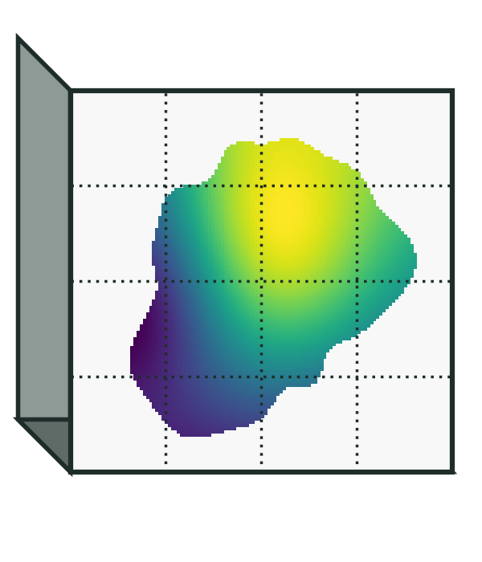
Precipitation Min and max temperature Shortwave radiation Vapor pressure Daylength Snow water equivalent
Static Variables
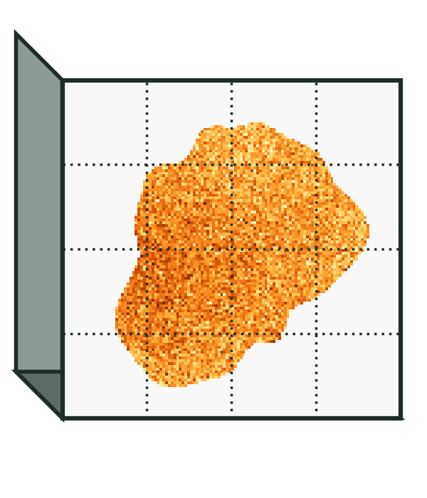
Elevation Clay, sand, and silt Available water capacity Field capacity
Evaluation Settings
Temporal
Spatial
\(\hat Q_{b,t} = \mathrm{HydroTransformer}\big(X_{b,\,t-L+1:t},\; S_b\big)\)
\(X_{b,\,t-L+1:t}\) gridded dynamic variables over the last \(L\) days \(S_b\) gridded static variables of basin \(b\) \(\hat Q_{b,t}\) predicted discharge for basin \(b\) on day \(t\)
What goes into the model? Six dynamic variables, all gridded: precipitation, minimum and maximum temperature, shortwave radiation, vapor pressure, daylength, and snow water equivalent.
[click] And static variables, also gridded: elevation, clay, sand and silt fractions, available water capacity, and field capacity. Six static rasters in total.
[click] We evaluate in the two settings from the start of the talk: temporal, future years in basins we trained on, and spatial, basins held out completely.
[click] Written as one line: predicted discharge for basin b on day t is HydroTransformer applied to the last L days of gridded weather and the basin's static fields. Next, what is inside that function.
Study 1: HydroTransformer
Encode dynamic and static basin information separately, then integrate them through conditioning.
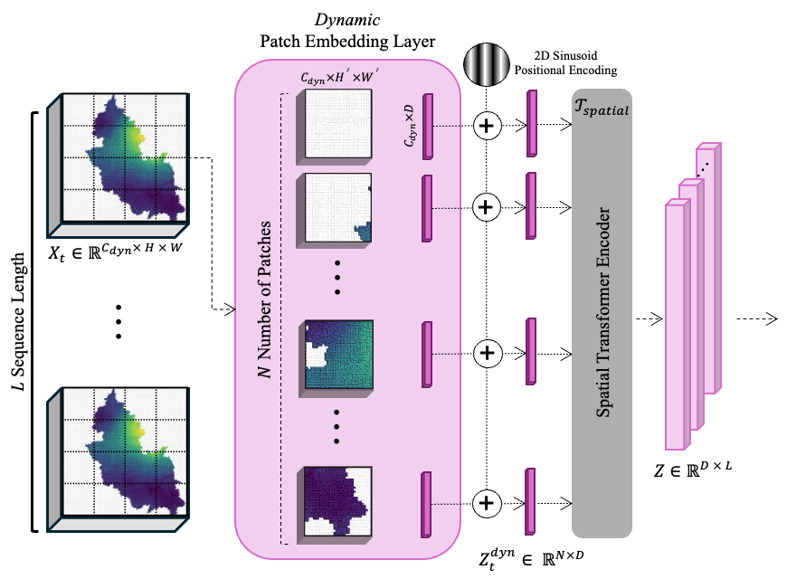
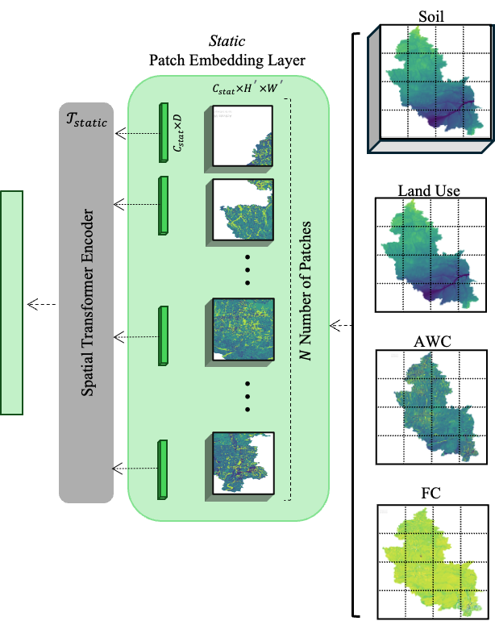
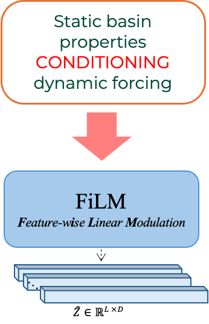
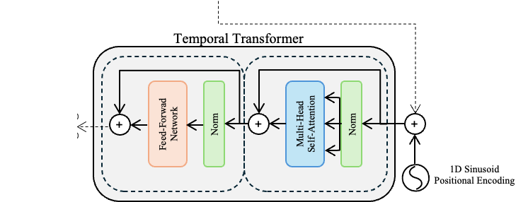
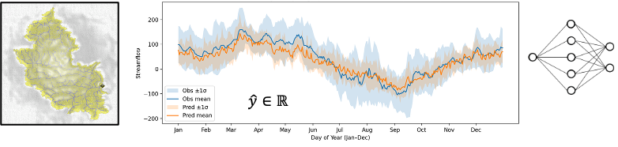
This is HydroTransformer, built one piece at a time.
[click] First the dynamic branch. For each day, the gridded weather is cut into patches, each patch is embedded, a 2D sinusoidal positional encoding tells the model where the patch sits, and a spatial Transformer encoder reads them. So the model keeps where things happen inside the basin. We do this for each of the L days in the input window.
[click] The static branch mirrors it, with its own patch embedding and spatial encoder, for soil, land use, available water capacity, and field capacity.
[click] The two meet in FiLM, feature-wise linear modulation. The static encoding conditions the dynamic features: it scales and shifts every one of them. The basin's physiography decides how it responds to the same weather.
[click] A temporal Transformer then reads the conditioned sequence, with a one-dimensional positional encoding for time.
[click] And the output is the predicted streamflow at the basin outlet. Next, how we tested it.
Study 1: FiLM Conditioning
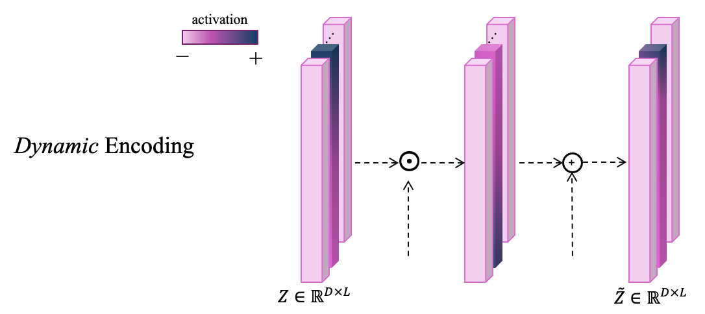
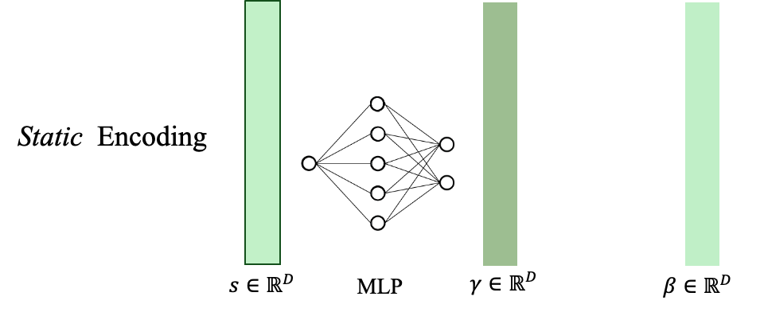
How static variables are CONDITIONING
\(\tilde z_{b,t} = z_{b,t}\odot(1+\gamma_b)+\beta_b\)
\(\gamma_b\): Basin-specific feature scaling \(\beta_b\): Basin-specific feature shifting
This slide is about FiLM, feature-wise linear modulation, the block that lets the static basin properties condition the dynamic weather features.
[click] FiLM acts on the dynamic encoding Z: one feature vector per day over the input window, coming from the spatial Transformer.
[click] Where does the conditioning come from? The basin's static vector s goes through a small MLP, which outputs two vectors, gamma and beta. They depend only on the basin. Gamma multiplies every dynamic feature, the dot, and beta is then added.
[click] In one line: z tilde equals z times one plus gamma, plus beta. The result, Z tilde, has the same shape as Z.
[click] Gamma is a basin-specific feature scaling, and beta a basin-specific feature shifting. In words, the basin's physiography decides how it responds to the same weather. Next, how we tested it.
Study 1: Experimental setup
Does distributed basin structure improve generalization across time and unseen basins ?
Evaluation Settings
Temporal generalization:
Spatial generalization:
Generalization Tests
Sequence Lengths: {5, 21, 365}
Temporal generalization
Train: 2000–2013
Test: 2014–2020
Same basins, future period
Spatial generalization
12 completely held-out basins
No discharge observations from test basins used during training
Benchmarks
LSTM EA-LSTM Informer CNN-LSTM HydroTransformer
Evaluation Metrics
Nash–Sutcliffe Efficiency (NSE)
Range: (−∞, 1]
Kling–Gupta Efficiency (KGE)
Range: (−∞, 1]
Here is the experimental setup, and the question it has to answer: does distributed basin structure improve generalization across time and in unseen basins?
We use the two tests from earlier. Temporal: future periods in basins we have observed. Spatial: completely held-out basins.
[click] The study area is Michigan's Lower Peninsula. For the temporal test, we train on 2000 to 2013 and test on 2014 to 2020 in the same basins. For the spatial test, twelve basins are held out completely, the red triangles on the map, and none of their discharge is used in training. We use input windows of 5, 21, and 365 days.
[click] We compare against LSTM, Entity-Aware LSTM, Informer, and CNN-LSTM.
[click] And we report two metrics, Nash–Sutcliffe efficiency and Kling–Gupta efficiency. Both have a maximum of one, which is a perfect match, and no lower bound.
Study 1: Generalization Performance
With these two evaluation settings fixed, does distributed basin structure actually improve prediction ?
NSE Evaluation
Temporal Generalization
Model No static With static 5 21 365 5 21 365 LSTM 0.180 0.063 0.119 0.439 0.444 0.535 EA-LSTM – – – 0.383 0.309 0.579 CNN–LSTM 0.363 0.529 0.639 – – – Informer 0.242 0.300 0.370 0.436 0.561 0.628 HydroTransformer 0.458 0.658 0.445 0.463 0.659 0.670
Spatial Generalization
Model No static With static 5 21 365 5 21 365 LSTM 0.273 0.455 0.590 0.314 0.408 0.555 EA-LSTM – – – 0.420 0.547 0.563 CNN–LSTM 0.295 0.444 0.595 – – – Informer 0.574 0.554 0.609 0.512 0.493 0.634 HydroTransformer 0.304 0.439 0.510 0.470 0.596 0.668
HydroTransformer improves generalization, most clearly in ungauged basins .
The question: with these two evaluation settings fixed, does distributed basin structure actually improve prediction? On the left are the distributions of NSE and KGE across basins for 5-, 21-, and 365-day windows, as cumulative distribution functions. The further right a curve sits, the better. The blue panel is temporal generalization and the pink panel is spatial generalization. The green HydroTransformer curve is generally furthest right.
[click] The temporal table gives the median NSE, without and with static inputs. With static inputs, HydroTransformer is best at every window: 0.463, 0.659, and 0.670 at 365 days, against 0.535 for the LSTM and 0.628 for Informer.
[click] The spatial table, for basins the model has never seen, tells the same story at the longer windows: 0.596 and 0.668 for HydroTransformer. Informer is slightly ahead at 5 days, 0.512.
[click] So the answer is yes: HydroTransformer improves generalization, most clearly in ungauged basins. Next, how much of that comes from the static fields.
Study 1: Impact of Distributed Static Attributes
How does static basin information improve HydroTransformer's performance?
\(\Delta \mathrm{NSE} = \mathrm{NSE}_{\textit{with static}} - \mathrm{NSE}_{\textit{without static}}\)
Temporal
\(\Delta \mathrm{NSE} = \begin{cases} +0.005, & 5d \\ +0.001, & 21d \\ +0.225, & 365d \end{cases}\)
Spatial
\(\Delta \mathrm{NSE} = \begin{cases} +0.166, & 5d \\ +0.157, & 21d \\ +0.158, & 365d \end{cases}\)
Distributed static variables improve generalization .
Why does it transfer? The question: how does static basin information improve HydroTransformer's performance? We trained the same model with and without the distributed static fields. On the left, the change in median NSE for each window length, and the per-basin distribution of those changes.
[click] The quantity is simple: the change in NSE equals the NSE with static fields minus the NSE without them.
[click] In the temporal test, static fields barely matter at short windows, plus 0.005 and plus 0.001, but help a lot at 365 days, plus 0.225.
[click] In the spatial test, they add about 0.16 NSE at every window length: 0.166, 0.157, and 0.158. When the model has not seen a basin, the static fields are how it knows what kind of basin it is in.
[click] So distributed static variables improve generalization, and most where we need it, in unseen basins.
Study 1: Conclusion
Study 1 shows that keeping the basin as a spatial field improves generalization.
Established
Distributed fields carry more information than basin-averaged (lumped) inputs.Conditioning dynamic fields on static basin structure outperforms simple concatenation.The gains are largest in unseen basins .
Next Challenge
The workflow is region-specific : it was built for 61 basins in Michigan.
Distributed rasters are computationally expensive to process, which limited us to six static variables.
Scaling to thousands of basins requires standardized data .
Next: BASINGRID, a standardized dataset
What did Study 1 establish? Distributed fields carry information that lumped averages throw away. Conditioning weather on static basin structure, through FiLM, beats concatenation. And the benefit is largest exactly where we need it, in unseen basins.
[click] But there is a limitation. This was a regional study: 61 Michigan watersheds, with a hand-built preprocessing pipeline. Distributed rasters are expensive to process, which is why we could only afford six static variables. Every new region means re-aligning different coordinate systems, resolutions, and coverages from scratch, so the workflow does not scale on its own.
[click] To test the idea across the whole country, the field representation needs to become standardized data. That is BASINGRID.
Study 2
BASINGRID
A distributed 40-year spatiotemporal hydrology dataset for U.S. basins
Study two: BASINGRID. Here the representation changes from a hand-prepared field for one region to a standardized tensor that has the same shape for every basin, at national scale.
This study is as much about computational infrastructure as about hydrology. The scientific question is whether very different gridded datasets can be harmonized into one basin-aligned format without losing what makes a distributed representation useful. The engineering question is how to store and serve it for thousands of basins and forty years.
BASINGRID is published in Scientific Data.
Study 2: Motivation
Trade-off of scale and spatial structure
Raw gridded data sources
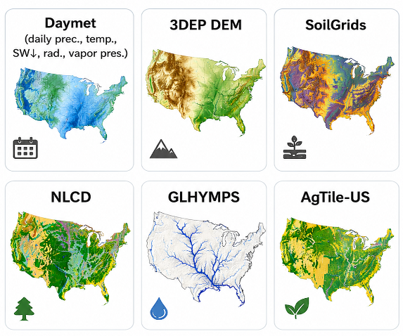
Different projections, resolutions and coverage
Existing large-scale datasets
The motivation is a trade-off between scale and spatial structure. On the left are the raw gridded sources: Daymet weather, the 3DEP elevation model, SoilGrids, NLCD land cover, GLHYMPS hydrogeology, and AgTile-US tile drainage. Each comes in its own projection, resolution, and coverage.
[click] Large-sample datasets like CAMELS, Caravan, LamaH, and CAMELS-H solve scale by reducing each basin to a basin-averaged time series and a table of attributes. That scales well, but the spatial structure is gone, which is exactly what Study 1 showed matters.
[click] What we need is both: basin-aligned layers on the same grid for every variable, keeping the spatial information but as easy to use at scale as an attribute table.
Study 2: Variables and data sources
16 variables at three native temporal resolutions
DAILY365 time steps / year 6 variables
Meteorological forcings Precipitation · minimum and maximum temperature · shortwave radiation · snow water equivalent · vapor pressure
SOURCE Daymet: ~1 km gridded daily meteorology
ANNUAL1 time step / year 2 variables
Land-surface evolution Potential evapotranspiration (PET) · land-cover classPET is computed daily with Hargreaves and stored as an annual sum.
SOURCES PET: derived from CW3E
STATICno time dimension 8 variables
Basin attributes Topography: elevation · Soil: clay, silt, sand, bulk densityHydrogeology: permeability, hydraulic conductivity · Agriculture: tile drainage
SOURCES DEM: USGS 3DEP · Soil: SoilGrids
Different coordinate reference systems + different spatial and temporal resolutions
Here is what BASINGRID contains: sixteen variables at three native temporal resolutions.
Six daily meteorological forcings from Daymet, about one-kilometer gridded weather: precipitation, minimum and maximum temperature, shortwave radiation, snow water equivalent, and vapor pressure.
[click] Two annual variables describe how the land surface changes: potential evapotranspiration, computed daily with Hargreaves and stored as an annual sum, and the NLCD land-cover class.
[click] And eight static basin attributes: elevation from 3DEP, four soil properties from SoilGrids, permeability and hydraulic conductivity from GLHYMPS, and tile drainage from AgTile-US.
[click] The difficulty is that every one of these sources uses its own coordinate system and its own spatial and temporal resolution.
Study 2: A common grid for every basin
Different sources (CRS, resolution, coverage) ⟶ one reference grid ⟶ basin-aligned 64 × 64
Heterogeneous source grids
Basin-aligned output
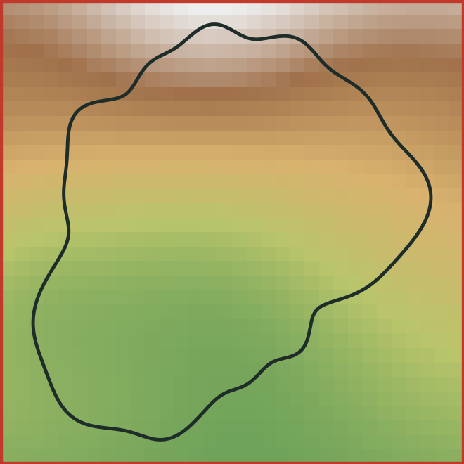
window ×
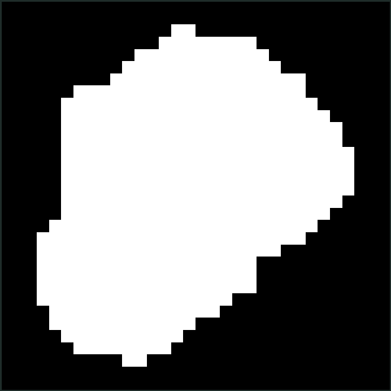
mask =
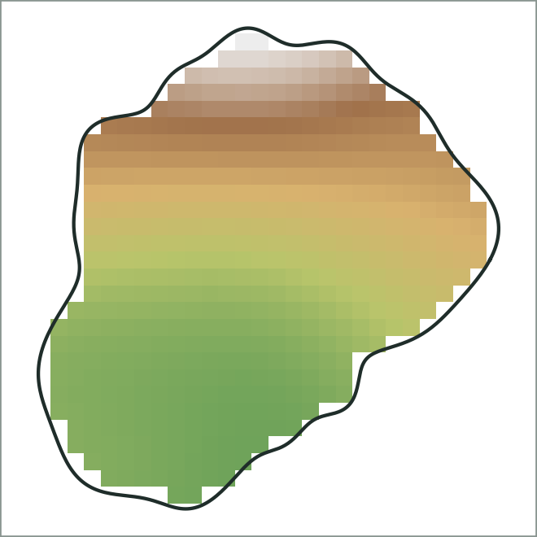
64 × 64 basin tensor
values + mask + physical-scale metadata
Continuous variables: bilinear interpolation
Categorical variables: nearest neighbor
Standardized CRS · aligned grid · consistent tensor shape
Here is the core transformation. On the left, the source grids: each one in a different coordinate system, at a different resolution, with different coverage.
[click] Everything is reprojected and resampled onto one reference grid, the Daymet grid. Continuous variables use bilinear interpolation; categorical variables like land cover use nearest neighbor, so classes are never blended into meaningless values.
[click] Then, for each basin, we cut a window around the boundary, apply a binary basin mask, and resample to a fixed 64 by 64 tensor. We keep the mask and the physical-scale metadata, so the true basin size is not lost.
[click] The result: every basin, every variable, the same shape.
Study 2: Organizing the Data Cube
Native temporal resolutions are preserved within one model-ready array structure.
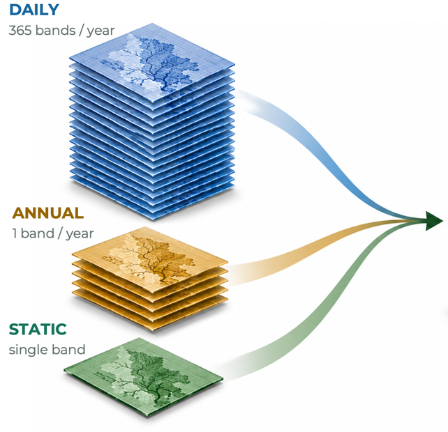
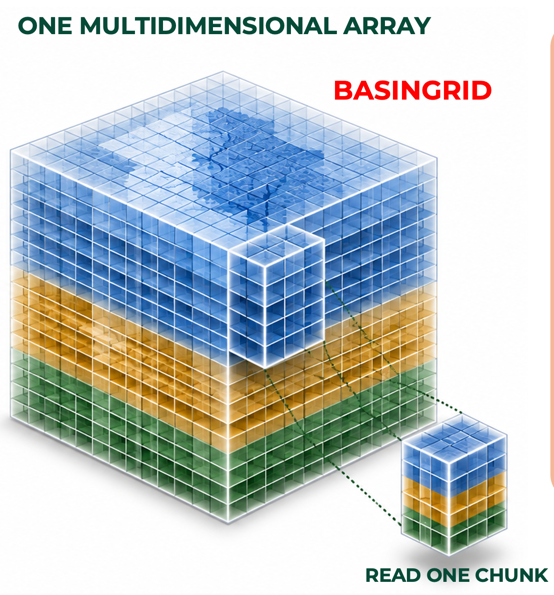
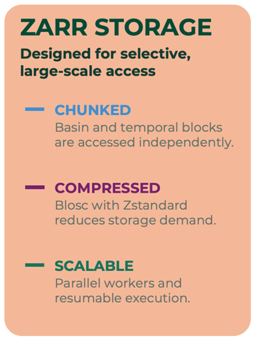
PRESERVE TEMPORAL RESOLUTION · STANDARDIZE SPATIAL SHAPE · SCALE ACCESS ACROSS 9,067 BASINS
I want to frame this slide as computational infrastructure, because it is the part most relevant here. The variables come at different temporal resolutions: daily weather with 365 bands a year, annual layers like land cover with one band a year, and static layers like soils with a single band.
[click] Instead of flattening them, we keep each native resolution inside one multidimensional array. Daily, annual, and static layers stack into a single cube, and a small block of it, one chunk, can be read on its own.
[click] It is stored in Zarr, designed for selective, large-scale access. It is chunked, so basin and temporal blocks are read independently. It is compressed with Blosc and Zstandard. And it scales, with parallel workers and resumable execution.
[click] The array is indexed by basin, year, time, variable, and the 64 by 64 grid, so a data loader can stream exactly the basins and years it needs.
[click] In short: preserve temporal resolution, standardize spatial shape, and scale access across all 9,067 basins.
Study 2: Validation metrics
Three complementary checks: basin area , continuous values , and categories
Area preservation
Does the normalized mask keep the basin area?
\(R_A = A_{\text{mask}} / A_{\text{vector}}\)Ideal: \(R_A = 1\), same physical area
Continuous values
Does the patch keep continuous values?
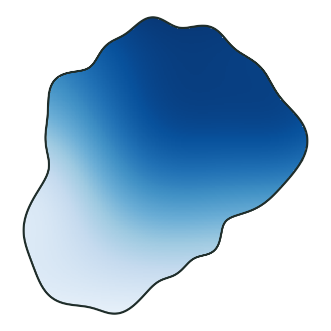
native → 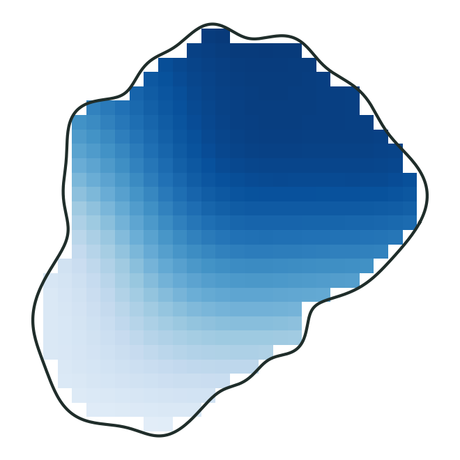
64 × 64 MdAPE : typical % difference from the native rasterIdeal: MdAPE → 0%
Categorical fidelity
Are land-cover categories kept?
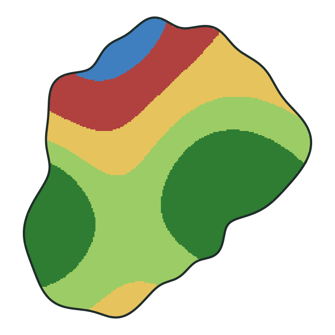
native → 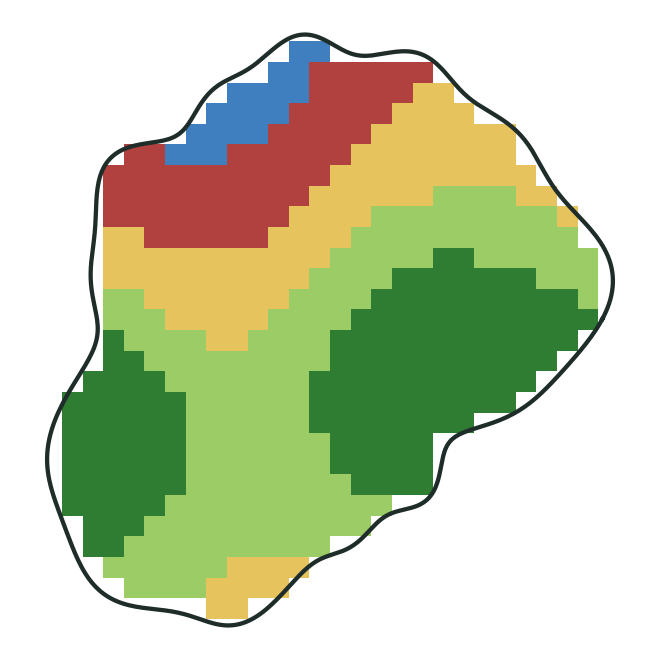
64 × 64 Class-proportion distance and dominant-class agreement Ideal: 0% distance, 100% agreement
Standardizing is only useful if it does not distort the basin, so we defined three checks, each with a clear ideal value.
First, area preservation. Resampling every basin to 64 by 64 changes the effective resolution, so we ask whether the mask, after restoring each basin's pixel area, still matches the original vector basin. The ratio should be one.
[click] Second, continuous values. For variables like precipitation, the median absolute percentage error between the patch and the native raster should be close to zero.
[click] Third, categories. For land cover, the class proportions should barely change, and the dominant class should agree every time. Next, the results.
Study 2: Validation, basin area is preserved
After restoring basin-specific pixel area, the normalized mask closely matches the original vector basin.
Original vector basin →
64 × 64 binary mask
Area agreement · 9,067 basins
1.094 median mask / vector area ratio
1.100 mean mask / vector area ratio
Normalization changes the effective resolution , not the basin's physical area .
The 64 × 64 normalization keeps basin-size information.
The first result is area. On the left, a schematic of the original vector basin and its 64 by 64 binary mask.
[click] Across all 9,067 basins, once each basin's own pixel area is restored, the mask area divided by the vector area has a median of 1.094 and a mean of 1.100. The slight overestimate comes from boundary pixels, which count as fully inside. So the normalization changes the effective resolution of each basin, but not its overall physical area.
[click] In short, the 64 by 64 format keeps basin-size information, which matters later because Basin2Vec uses it.
Study 2: Validation, resampled values
Native-grid and 64 × 64 patch values stay closely aligned across small, medium, and large basins.
Continuous:
native grid → 64 × 64 patch Categorical:
native grid → 64 × 64 patch
Precipitation fidelity < 1% MdAPE in every basin-size class
Land-cover fidelity 100 %dominant-class agreementclass-proportion distance 1.23–2.89%
The 64 × 64 representation keeps basin-scale information across basin sizes.
Next, the values inside the basin. For precipitation, a continuous variable, the 64 by 64 patch stays within one percent median absolute percentage error of the native grid, in every basin-size class: small, medium, and large.
[click] For land cover, a categorical variable, the dominant class agrees one hundred percent of the time, and class proportions shift by only 1.2 to 2.9 percent.
[click] So the tensor is a faithful, standardized version of the basin, across basin sizes, and that is what lets the same pipeline run on all nine thousand basins.
Study 2: BASINGRID
Spatial coverage
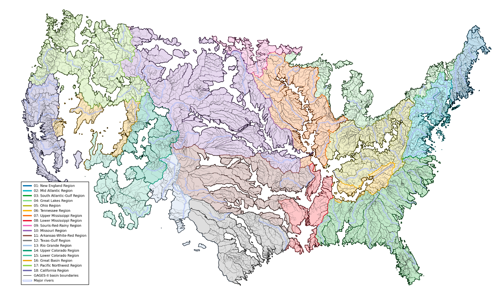
Dataset
Spatial scale 9,067 Time period 1985–2024 Resolution Daily · 64 × 64 per basin Format ML-ready Zarr chunks Variables 16 · 6 daily, 2 annual, 8 static
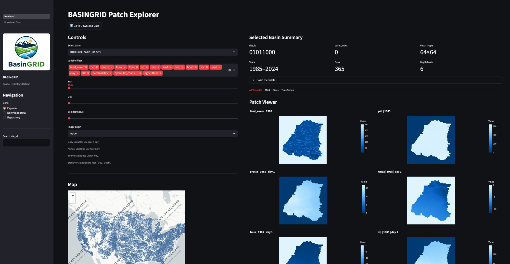
basingrid.ciwre.msu.edu · Scientific Data
BASINGRID turns distributed basin modeling from a study-specific workflow into reusable infrastructure .
Here's the result. BASINGRID covers 9,067 GAGES-II basins across the contiguous U.S., colored here by hydrologic region.
[click] It has daily data from 1985 through 2024, every basin on its own 64-by-64 grid, stored as machine-learning-ready Zarr chunks. It's public, and there's a patch explorer website where you can pick a basin and inspect its layers before downloading. It's published in Scientific Data.
[click] What changed between Study 1 and Study 2 is that distributed basin modeling is no longer a one-off workflow for one region. It's reusable infrastructure. The Michigan study took months of preprocessing; with BASINGRID, any of these nine thousand basins is one array read away.
But that raises the next problem.
Study 2: Conclusion
Study 2 shows that the spatial-field representation can be standardized and scaled to the national level.
Established
Heterogeneous rasters can be harmonized into common basin-aligned tensors .
The 64 × 64 patches preserve basin geometry, values, and categories .
The pipeline scales to 9,067 basins over 1985–2024 , using chunked, parallel storage.
Next Challenge
Each basin is now a stack of variables × time × 64 × 64 values.
Every downstream model would have to learn to read this stack from scratch.
The tensors are too high-dimensional to reuse directly.
Next: Basin2Vec, a compact basin vector
What Study 2 established: heterogeneous rasters can be harmonized into common basin-aligned tensors; the 64-by-64 patches keep geometry, continuous values, and categories; and the pipeline scales to 9,067 basins over forty years.
[click] The next challenge comes from the scale itself. Each basin is now a stack of many variables, by thousands of days, by 64 by 64 cells. That is rich, but every downstream model would have to learn to read the stack from scratch, at a large compute cost each time.
[click] So the question becomes: can we compress each basin into a compact vector that keeps what matters hydrologically, learn it once, and let any model reuse it? That is Basin2Vec.
Study 3
Basin2Vec
Learning basin-centric embeddings for scalable hydrologic modeling
Study three: Basin2Vec. Here the representation becomes a compact learned embedding, one vector per basin, learned from BASINGRID without any streamflow observations.
That last detail matters. If the representation needed observed streamflow, it would be useless for ungauged basins. Basin2Vec learns only from the weather and physiography in the tensors, so we can compute it for any basin.
This work is accepted at WACV 2027, with co-authors at Michigan, UC San Diego, and my advisors at MSU. The question to keep in mind: can one compact vector carry enough of the basin to transfer?
Study 3: Motivation
What we have now
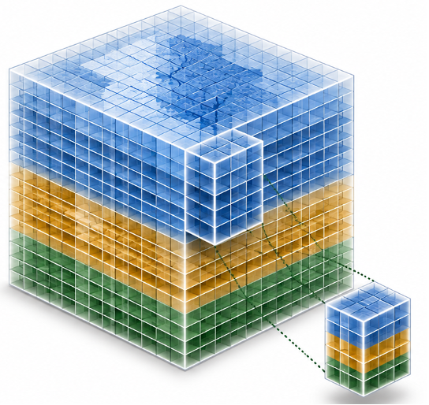
BASINGRID: dynamic static annual basin mask
Current compact alternatives
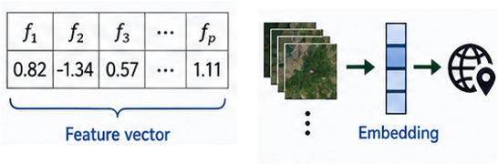
A. CAMELS attributes
B. EO embeddings
What do we need?
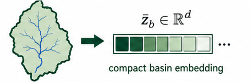
One compact vector per basin
Where do we stand after BASINGRID? Every basin is a data cube of dynamic, static, and annual variables plus a mask. That is spatially rich, but high-dimensional: every downstream model would have to learn to read it from scratch.
[click] The current compact alternatives each miss something. CAMELS attributes are a compact feature vector, but they are lumped, so the spatial structure is lost. Earth-observation embeddings are compact and learned from imagery, but they are not hydrology-aware.
[click] What we need is one compact vector per basin, learned from hydrologic data itself, that any model can reuse.
Study 3: Why existing representations fall short
Comparison
Approach Basin-indexed Spatial & scale-aware Hydrologic relation-aware CAMELS attributes AlphaEarth TESSERA SatCLIP Basin2Vec (ours)
Requirement 1 Basin-indexed
One representation for one basin.
Requirement 2 Spatial and scale-aware
Learns within-basin structure and keeps physical basin size.
Requirement 3 Hydrologic relation-aware
Embedding geometry reflects hydrologic relations.
Goal: a compact, basin-indexed representation whose geometry is organized by hydrologic relations.
Here is the comparison from the paper. Each row is a way to describe a basin, scored on three properties. CAMELS attributes are basin-indexed but not spatial. AlphaEarth, TESSERA, and SatCLIP are built for pixels, patches, or coordinates rather than basins, and none of them knows about hydrologic relations. Only Basin2Vec is the target on all three.
[click] So we set three design requirements. First, basin-indexed: one representation per basin.
[click] Second, spatial and scale-aware: learn from within-basin structure while remembering physical size.
[click] Third, hydrologic relation-aware: the geometry of the embedding space should reflect relations such as one basin being nested inside another.
[click] The goal is a compact, basin-indexed representation whose geometry is organized by those relations.
Study 3: Methodology overview
From a basin-year tensor to a reusable basin embedding
Input entity
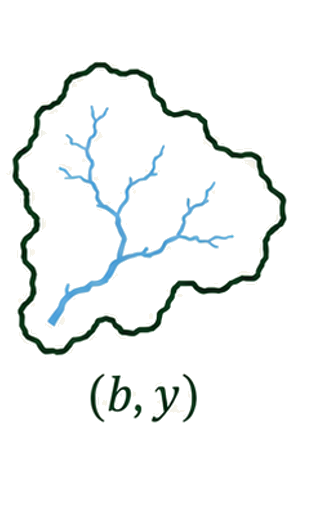
one basin-year
Basin-year tensor
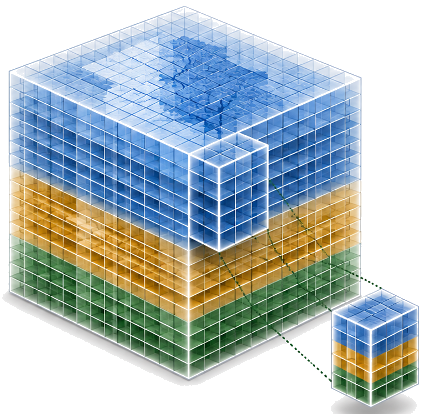
Monthly dynamic · annual · static Basin mask + metadata , from BASINGRID
Basin2Vec
Scale-aware encoder
mask-aware spatial encoding of the tensor
Relation-aware self-supervision
hydrologic relations shape the embedding space
No observed streamflow is used
Output
\(z_{b,y} \in \mathbb{R}^d\)
The learning unit is a basin-year: one basin, one year.
[click] From BASINGRID, a basin-year is twelve months of hydroclimatic rasters, the static and annual physiographic layers, the basin mask, and basin metadata such as drainage area and shape.
[click] Basin2Vec has two parts: a scale-aware encoder that turns this tensor into a vector, and relation-aware self-supervision that decides which basin-years should end up close together. Neither uses observed streamflow.
[click] The output is a normalized basin-year embedding, z. Let me open each part, starting with the encoder.
Study 3: Scale-aware encoder
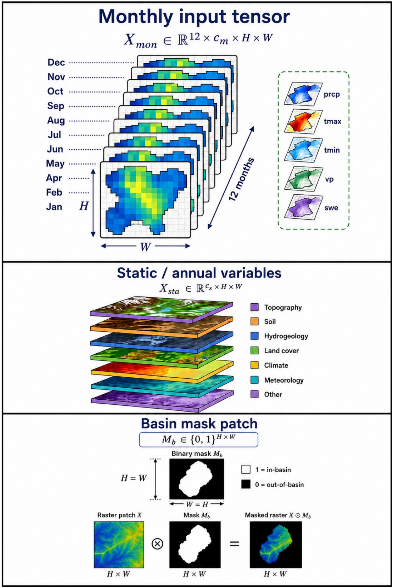
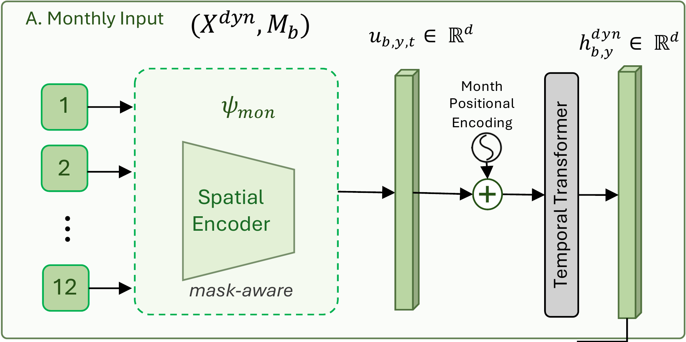
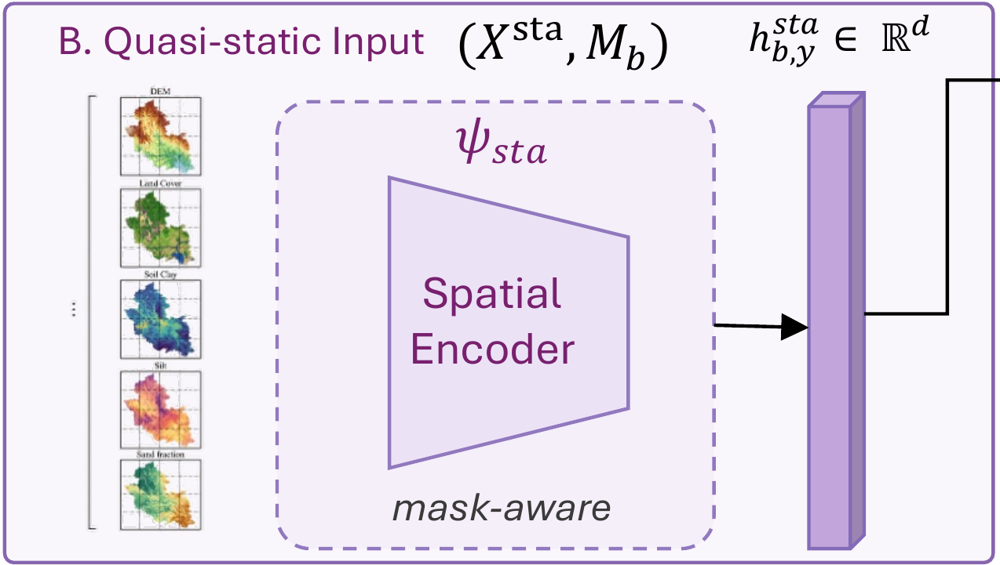
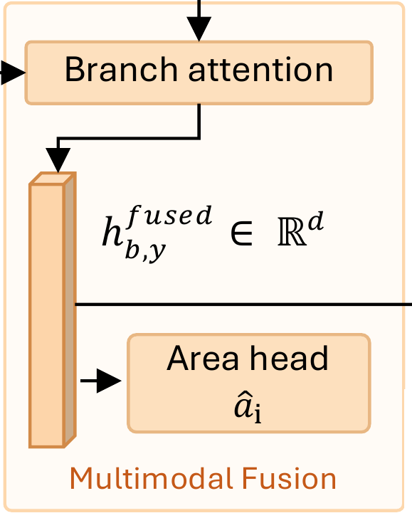
Mask-aware Out-of-basin cells never enter the pooling.
Area head Predicts drainage area, so physical basin size is kept.
Gated metadata Basin geometry is added through a learned gate.
This is the scale-aware encoder, built one part at a time. On the left, the inputs for one basin-year: a monthly input tensor with twelve months of weather, the static and annual layers, and the basin mask.
[click] Branch A takes the monthly input. A mask-aware spatial encoder turns each of the twelve months into one vector, a month positional encoding is added, and a temporal Transformer reads the twelve months.
[click] Branch B takes the quasi-static layers, soils, land cover, and so on, through its own mask-aware spatial encoder.
[click] Branch attention fuses the two branches into one representation, and an area head predicts drainage area from it.
[click] Branch C takes the basin metadata. A metadata encoder feeds a gated fusion, which is normalized into the basin-year embedding z.
[click] Three design points. The mask is applied before pooling, so cells outside the basin never leak in. The area head forces the embedding to remember physical size. And metadata enters through a learned gate rather than plain concatenation.
Study 3: Contrastive learning
Learn an embedding space by pulling related samples together and pushing unrelated samples apart .
Original and candidate samples
anchor
similar
dissimilar
Contrastive learning rule
maximize similarity to positives, minimize similarity to negatives
Learned embedding space
close
far
The standard rule treats only two views of the same sample as related. We extend it to hydrologically meaningful relations between basins.
How do we train the encoder without labels? With contrastive learning. Start from an anchor sample, and look at candidates: some are similar to it, most are not.
[click] The rule is simple: pull the similar sample closer in embedding space, and push the dissimilar ones farther away.
[click] After training, related samples sit close together and unrelated ones far apart, so distance in the embedding means something.
[click] The catch is the definition of related. The standard rule says only two augmented views of the same sample are related, and everything else is a negative. For basins that is too narrow: the same basin in another year, or a basin nested inside this one, is clearly related. So we extend the rule to hydrologic relations.
Study 3: Hydrology-aware relations
How do we define hydrologically meaningful relations among basin-years?
Temporal positive weight decays with the gap in years, \(e^{-|y_i-y_j|/\tau_y}\)
Overlap / nested positive weighted by overlap, \(\omega_{ij} = \frac{|G_i\cap G_j|}{\min(|G_i|,|G_j|)}\)
Negatives pushed apart more weakly when basin metadata are similar
We use time , space , and basin similarity to structure the embedding space.
This figure from the paper shows the relations, starting from an anchor basin-year on the left. One, a hard positive: another augmented view of the same basin-year. Two, a temporal positive: the same basin in a different year. Three, an overlap or nested positive: a different basin that overlaps or contains this one, since nested basins share water. Four and five are negatives: different basins with no overlap, split by whether their metadata is similar.
[click] The details: temporal positives count less as the years get further apart. Overlap positives are weighted by how much the basins overlap, which reaches one when one is fully nested. And negatives with similar metadata are pushed apart more gently.
[click] So time, space, and basin similarity together shape the embedding space.
Study 3: Hydrology-aware contrastive loss
\(\mathcal{L} = \mathcal{L}_{con} + \lambda_n\,\mathcal{L}_{neg} + \lambda_a\,\mathcal{L}_{area}\)
Relation attraction
\(\mathcal{L}_{con}\)
Pull hard, temporal, and overlap / nested positives toward the anchorStrength set by the relation weights +
Negative separation
\(\mathcal{L}_{neg}\)
Push non-overlapping basins below a similarity marginMargin is looser for metadata-similar basins +
Scale preservation
\(\mathcal{L}_{area}\)
Keep basin size: predict standardized log drainage areaSmooth-L1, robust to very large basins
Pull related basin-years together, push unrelated basins apart, and keep basin scale.
The full training objective has three terms, three simple forces on the embedding space.
[click] The first, relation attraction, is the contrastive term. It pulls each anchor toward its hard, temporal, and overlap or nested positives, with strengths set by the weights from the previous slide.
[click] The second, negative separation, is a margin loss. It pushes non-overlapping basins below a similarity margin, and that margin is looser when two basins have similar metadata, so physiographically similar basins are not forced apart.
[click] The third keeps scale. An auxiliary head predicts the basin's log drainage area with a smooth-L1 loss, which stays robust to very large basins.
[click] Together: pull related basin-years together, push unrelated ones apart, and remember how big the basin is.
Study 3: Final product
From basin-year embeddings to one reusable basin descriptor
A basin across years
1985
\((b,\,y)\)
1995
\((b,\,y)\)
2005
\((b,\,y)\)
2015
\((b,\,y)\)
⋮
same basin, different years
Encode each basin-year
pretrained
\(z_{b,1985}\)
… \(z_{b,1995}\)
… \(z_{b,2005}\)
… \(z_{b,2015}\)
… ⋮
\(z_{b,y}\in\mathbb{R}^{64}\)
one 64-D embedding
Average
L2 normalize
\(\bar z_b=\mathrm{Normalize}\Big(\tfrac{1}{|Y_b|}\textstyle\sum_{y\in Y_b} z_{b,y}\Big)\)
Final Descriptor
\(\bar z_b\)
… fixed basin descriptor
one reusable 64-D
One fixed descriptor is used for the downstream streamflow prediction task.
After pretraining, we take one basin across all of its available years: 1985, 1995, 2005, and so on. Each year is a basin-year, the same basin with that year's data.
[click] We encode every basin-year with the pretrained Basin2Vec encoder, which gives one 64-dimensional embedding per basin-year.
[click] Then we average the yearly embeddings across years and L2-normalize the result. Written out, the descriptor equals the normalized mean of the embeddings over the years available for that basin. Averaging makes it a stable property of the basin rather than of one wet or dry year, and it allows a fair comparison with Earth-observation baselines that cover different years.
[click] That gives one fixed, reusable 64-dimensional descriptor per basin.
[click] This single, frozen descriptor is what we hand to the downstream streamflow models. Next, how we test it.
Study 3: Downstream evaluation setup
Same prediction setup; only the basin descriptor changes .
\(\hat Q_{b,t} = F_\eta\big([\,x^{met}_{b,t-L+1},\dots,x^{met}_{b,t}\,],\; c_b\big),\qquad L\in\{120,\,365\}\)
Daily weather \(x^{met}\)
Daymet precipitation, shortwave radiation, max and min temperature, vapor pressureno observed streamflow as input
Basin descriptor \(c_b\) · frozen
Basin2Vec CAMELS attributes (27) AlphaEarth TESSERA SatCLIP
Predictor \(F_\eta\)
LSTM TFT TimeXer Timer-XL iTransformer
Any difference in skill comes from the representation , not the model.
The evaluation is deliberately simple. A streamflow model predicts discharge for basin b on day t from a window of daily weather, 120 or 365 days, plus a fixed basin descriptor.
[click] The weather is the same five Daymet variables for everyone, and no observed streamflow is given as input.
[click] The descriptor is frozen, and we change only where it comes from: Basin2Vec, the 27 CAMELS attributes, AlphaEarth, TESSERA, or SatCLIP.
[click] And we repeat everything with five different predictors, from an LSTM to recent Transformers.
[click] Same architecture and same training within each predictor, so any difference in skill comes from the representation.
Study 3: Generalization experiments
Does the same descriptor generalize across time and across space ?
Temporal generalization
671 CAMELS-US basins, same basins in both periods
develop 1990–2009
test 2010–2014
Zero-shot spatial transfer
6-fold ungauged-basin cross-validation
Held-out basins excluded from training and early stopping Train 1990–2004, validate 2005–2014 on the rest Held-out basins evaluated over 1990–2014
Evaluation: median NSE ↑ and KGE ↑ across basins · 3 seeds
Two experiments, matching the two tests from the start of the talk. Temporal generalization uses 671 CAMELS-US basins: models are developed on 1990 to 2009, and tested on 2010 to 2014 in the same basins.
[click] Zero-shot spatial transfer uses six-fold ungauged-basin cross-validation. In each fold the held-out basins are excluded from training and from early stopping; the remaining basins train on 1990 to 2004 and validate on 2005 to 2014, and the held-out basins are evaluated over the full 1990 to 2014.
[click] We report the median NSE and KGE across basins, averaged over three random seeds. Higher is better, and one is perfect.
Study 3: Temporal generalization results
Median NSE · future period · L = 365
Predictor Basin2Vec CAMELS attr. AlphaEarth TESSERA SatCLIP LSTM 0.782 0.747 0.641 0.662 0.719 TFT 0.753 0.717 0.741 0.570 0.638 TimeXer 0.651 0.502 0.630 0.573 0.603 Timer-XL 0.730 0.591 0.674 0.627 0.402 iTransformer 0.627 0.555 0.559 0.576 0.464
Mean of three seeds. 671 basins, test 2010–2014. Basin2Vec is best in every row.
Average relative gain up to 8.3 % over the best alternative
Consistency 5 / 5predictors: first in NSE and KGE, at L = 120 and 365
Basin2Vec consistently improves future-period prediction across predictors and window lengths.
The temporal results. Each row is a predictor, each column a descriptor, and the values are median NSE on the 2010 to 2014 test period with a one-year input window. Basin2Vec, the green column, is best in every row. With an LSTM, it reaches 0.782, against 0.747 for the CAMELS attributes and 0.719 for SatCLIP.
[click] Across predictors, that is an average relative gain of up to 8.3 percent over the best alternative.
[click] And it is consistent: Basin2Vec ranks first in both NSE and KGE for all five predictors, at both the 120-day and 365-day windows.
[click] So the learned descriptor helps in the easier test. The harder test is space.
Study 3: Zero-shot spatial transfer results
NSE and KGE CDFs · held-out basins
Median NSE · held-out basins · L = 365
Median NSE LSTM TFT TimeXer Timer-XL iTransformer Basin2Vec 0.460 0.524 0.491 0.498 0.465 CAMELS attr. 0.071 0.147 0.065 0.092 0.007 AlphaEarth 0.079 0.132 0.126 0.136 0.151 TESSERA 0.092 0.127 0.065 0.022 0.085 SatCLIP 0.132 0.119 0.106 0.140 0.058
Basin2Vec reaches 3.5× the median skill of the strongest baseline on unseen basins.
Now the spatial test, basins never used in training. The table gives the median NSE for each predictor and each descriptor. Basin2Vec, in the top row, reaches 0.46 to 0.52 for every predictor, while the other descriptors are all between roughly 0.01 and 0.15.
[click] The cumulative distributions show it is not just the median. For every predictor, in both NSE on the top row and KGE on the bottom row, the pink Basin2Vec curve sits well to the right of the baselines across basins. With an LSTM, Basin2Vec's median KGE is 0.408, and every baseline is below zero.
[click] Overall, that is 3.5 times the median skill of the strongest baseline on unseen basins. A compact, hydrology-aware descriptor transfers to ungauged basins far better than attributes or general-purpose embeddings.
Study 3: Ablation study
Median NSE · LSTM · L = 365
Variant Temporal Spatial Full Basin2Vec 0.782 0.460 Scale-aware encoder w/o monthly branch 0.649 0.423 w/o quasi-static branch 0.635 0.404 w/o metadata conditioning 0.634 0.064 w/o area regularization 0.601 0.412 Relation-aware objective hard positives only 0.670 0.372 w/o temporal positives 0.621 0.418 w/o overlap / nesting positives 0.633 0.408 w/o negative-margin loss 0.643 0.409
Encoder Removing metadata conditioning collapses unseen-basin skill: 0.460 → 0.064 . The area term matters most over time.
Objective Standard contrastive learning (hard positives only) transfers worst: 0.372 on unseen basins.
Every component helps; the full model is best on every metric.
Is every piece needed? This is the ablation with an LSTM and a one-year window. Every variant is worse than the full model on both tests, shown in green at the top.
[click] In the encoder, metadata conditioning is the critical piece for transfer: without it, unseen-basin NSE collapses from 0.460 to 0.064. The area term matters most over time, where removing it drops temporal NSE to 0.601.
[click] In the objective, plain contrastive learning, with hard positives only, transfers worst to unseen basins, at 0.372. The hydrologic relations, temporal, overlap and nesting, are what make the space transfer.
[click] Every component helps, and the full model is best on every metric.
Study 3: Conclusion
Study 3 shows that learned basin embeddings outperform the other representation options, especially in unseen basins.
Established
Learned embeddings beat CAMELS attributes and Earth-observation embeddings.First for all 5 predictors : up to 8.3% gain over time, 3.5× median NSE in unseen basins.
Every component helps , most of all metadata for unseen-basin transfer.
Next Challenge
One descriptor per basin: one outlet , nothing about the reaches inside .
Static : no downstream flow of water.Ungauged reaches need the river network explicitly.
Next: the basin as a directed river network
What did Study 3 establish? The main takeaway: learned basin embeddings perform better than the other representation options, the CAMELS attributes and the Earth-observation embeddings. One frozen Basin2Vec descriptor ranked first for all five predictors, with average relative gains of up to 8.3 percent over time, and on unseen basins 3.5 times the median NSE of the strongest baseline. And the ablations show that every component helps, and metadata conditioning matters most for transfer to unseen basins.
[click] But look at what the descriptor is. It is one static vector per basin, averaged over years, used to predict basin-mean runoff at one outlet. It says nothing about the reaches inside the basin, and it does not represent how water moves downstream through the river network. To forecast at ungauged reaches, we need to represent that network explicitly.
[click] That is the last study: the basin as a directed river network.
Part 4 · Ongoing
A River-Network GNN for the Tennessee River Basin
The basin as a directed river network
Part four is ongoing work from my internship here at ORNL: a graph neural network over the full river network of the Tennessee River Basin.
This is the centerpiece, and I want to be careful about what I claim. The results I'll show are promising: the model holds its skill at gauges it never saw during training. But the experiments that would tell us why, whether it's the graph, the routing, or the physics-model pretraining, are still running. I'll show you exactly where the evidence stops.
Let me start with the problem setting.
Study 4: Motivation
Motivation Water managers need forecasts at river reaches that have no gauge .
Example: forecasting inflow to a hydropower reservoir
1 · The need 10-day inflow forecasts support hydropower and flood planning. They must use rain forecasts available at issue time , not observed future rain.
2 · The gap Only 128 of 58,834 reaches have a public gauge. Regional LSTMs predict per basin , and do not carry flow downstream through the network .
3 · The idea Treat the river as a directed network . Learn from simulation everywhere and observations at few gauges, then test at gauges never seen .
Open question: does skill at unseen gauges come from the network , the simulation , or the observations ?
Here is why this study exists. Hydropower and water managers need to know how much water is coming, days ahead, and the video shows a real example: a storm over a hydropower reservoir basin, and a forecast issued before the peak.
[click] The need: ten-day inflow forecasts, built from the rain forecast that actually exists at issue time, not from future rain observed afterward.
[click] The gap: only 128 of 58,834 reaches in the Tennessee River Basin have a public gauge, and regional LSTMs predict per basin, so they do not carry flow downstream through the river network.
[click] The idea: treat the river as a directed network, learn from a simulation everywhere and observations at a few gauges, and test at gauges the model never saw.
[click] And the honest open question: whether that skill comes from the network, the simulation, or the observations. That is what the ablations are for.
Part 4: Problem, forecasting where there is no gauge
Question this answers Can one model forecast flow at every reach , and keep its skill at gauges it never saw ?
58,834 NHDPlus reaches in the Tennessee River Basin (~106,000 km²)
128 reaches with a public flow gauge
> 99.8 % of reaches are ungauged
The Tennessee River Basin
Forecast task
10-day forecasts, 6-hourly (40 steps)Every reach, one forward pass
Future input: issue-time GEFSv12 rain only
The question for this part: can one model forecast flow at every reach in a river network, and keep its skill at gauges it never saw?
The map shows the Tennessee River Basin, about 106,000 square kilometers, represented by 58,834 NHDPlus reaches: a dense river graph. Only 128 of those reaches have an observed-flow gauge, the blue dots and orange triangles. More than 99.8 percent of the network is ungauged. To test transfer, some of those gauges are held out entirely during training.
[click] The task is operational in shape: every day, issue a 10-day forecast at 6-hour steps, for every reach at once, using only the rain forecast available at issue time, from GEFS version 12.
Study 4: Model: reach, neighbours, routing
Inputs
+ past flow weather · rain forecast catchment
1 · Remember
each reach reads its own history
2 · Share
neighbours exchange information
3 · Route
water travels downstream
Flow at
every reach
58,834
reaches
6-hourly, 10 days ahead
Where a gauge is visible:
recent observed flow sharpens the forecast, with upper quantiles for floods.
Two-stage training
A
Learn from simulation
every reach, from the NWM retrospective
no gauge data needed
B
Correct with observations
at the few gauges, staying near the simulation
test: gauges withheld in 5 folds
The model in four ideas. Each reach starts with its own inputs: weather, the rain forecast, catchment properties, and past flow where a gauge is visible.
[click] First, remember. One LSTM, with parameters shared by all 58,834 reaches, reads each reach's own history: 36 days of weather plus the 10-day rain forecast.
[click] Second, share. Three graph layers let each reach exchange information with its upstream and downstream neighbours. The moving dots are those messages.
[click] Third, route. Learned travel-time kernels move runoff downstream, so a flood wave takes time to arrive. The result is a six-hourly forecast, ten days ahead, at every reach.
[click] At gauges whose recent flow is visible, a separate gauge head sharpens the forecast and adds upper quantiles for flood warning.
[click] Training has two stages. A: every reach learns from the National Water Model retrospective simulation, with no gauge data. B: we correct the model with observed flow at the few gauges, while a prior keeps it near the simulation. To test transfer, five fold models each withhold a fifth of the gauges.
Part 4: Forecast protocol and test design
One forecast rule for every model
Observed: AORC weather + USGS flow (36 days)
Issue time · 00 UTC daily
Only the GEFSv12 control-member rain forecast
40 six-hour steps → 10 days
history window
Periods
Train GEFSv12 reforecast, 2000–2018 Model selection 2019 Test 23 Sep 2020 – 22 Dec 2025: 1,917
Two tests at observed gauges
Gauged Recent flow shown Held-out 5 folds, recent flow never seen in training
Same issues, gauges, masks, and GEFS rain for GNN and LSTM.
Baselines
Tuned basin LSTM (256 units), same rain and masksNWM operational forecast : a reference; own forcing and assimilation
Score: per-gauge mean NSE over 24, 48, 72, 96, 120 h ("days 1–5"), median over gauges, 95% gauge-bootstrap interval.
The protocol is as important as the model, so let me be precise. At each daily issue time, a model can use observed weather and observed flow up to that moment. After it, the only input is the GEFS version 12 control-member rain forecast. Every model follows that rule.
[click] Training uses GEFS reforecasts from 2000 to 2018, 2019 is for model selection, and the test is 1,917 daily forecasts from September 2020 through December 2025, years never used for training or selection.
[click] There are two tests at observed gauges, matching the two generalization tests: 101 gauges where recent flow is shown, and 98 gauges held out entirely, each forecast by the fold model that never saw it. The baselines: a tuned basin LSTM with identical inputs, and the NWM operational forecast, which is a reference, not a controlled comparison.
Part 4: Key result, skill at gauges the model never saw
0.0 0.1 0.2 0.3 0.4 0.5 median NSE, days 1–5
0.415 0.414 0.253
Gauged · 101 gauges
recent flow shown
0.378 0.111 0.258
Held-out · 98 gauges
never seen in training
−0.29
−0.03
GNN LSTM (tuned)NWM operational
Gauged GNN and LSTM tie : 0.415 vs 0.414
Held-out GNN 0.378 (0.34–0.41)
Whiskers: 95% gauge-bootstrap intervals. NWM assimilates USGS observations and may use held-out gauges, so it is a reference, not a controlled comparison.
Losing the gauge costs the GNN 0.03 NSE, the LSTM 0.29.
This is the key result. Median NSE over forecast days one to five, with 95 percent bootstrap intervals over gauges.
At gauged locations, where each model sees the gauge's recent flow, the graph model and the tuned LSTM tie: 0.415 versus 0.414. Both are well above the NWM operational forecast at 0.253.
[click] Now the held-out gauges, never seen in training. The LSTM collapses to 0.111. The graph model keeps most of its skill, 0.378, and its interval doesn't overlap the LSTM's. It's also above the NWM reference at 0.258, though NWM uses different forcing and assimilation, so that's not a controlled comparison.
[click] In one line: losing the gauge costs the GNN about 0.03 NSE and the LSTM 0.29. The model transfers to withheld gauges. Why it does is a separate question I'll come back to.
Part 4: Lead time, and natural-flow headwaters
Median NSE by lead time, 6 h → 10 days
Gauged : LSTM ahead at 24 h (0.629 vs 0.572); curves cross near 60 h; GNN ahead at 120 h (0.310 vs 0.270) and 240 h (0.148 vs 0.074)
Held-out : GNN ahead of LSTM at every lead; NWM best only at 6 h (0.842 vs 0.718)
Headwaters without dams
Days 1–5 GNN LSTM NWM Gauged 54 gauges 0.399 0.371 0.157 Held-out 52 gauges 0.353 0.088 0.157
Natural-flow subset: no upstream dam or other gauge. The held-out advantage holds; at gauges the GNN is ahead but intervals overlap with the LSTM.
Two checks on that headline. First, lead time, from 6 hours out to 10 days. Gauged: the LSTM is better in the first day or two, 0.629 versus 0.572 at 24 hours, because it uses the gauge's recent flow very well. The curves cross near 60 hours, and the graph model leads after that, out to ten days. Held-out: the graph model is ahead of the LSTM at every lead. NWM wins only at 6 hours, where it benefits from assimilating observations.
[click] Second, natural flow. Much of this basin is regulated by dams, and no model is given reservoir releases. In 54 headwater basins with no dam upstream, the same pattern holds: held-out, 0.353 for the GNN versus 0.088 for the LSTM. At gauges the GNN is ahead, but the intervals overlap.
Part 4: Honest limits
Flood peaks are too low
Peaks above the 99th percentile: 56–80% too low for every model. GNN q99 tail head is close (+21% at 1 day, gauged).
Hurricane Helene
Peaks 28–45× the gauge's 99th percentile: missed by every model , even the GNN with the rain that fell.
Not yet known
Is the transfer from connectivity , routing , or NWM pretraining ? Attribution experiments in progress.
Spatially blocked holdouts; mass-conservation audit
One training seed per model
Also
Forecasts are too smooth (variability ratio 0.690 gauged, 0.613 held-out). No reservoir releases as inputs.
Now the limits.
First, flood peaks. For floods above each gauge's 99th percentile, every model's peak is 56 to 80 percent too low, the graph model included. Its mean forecast is too smooth. The tail head helps: its 99th-percentile forecast is close to the observed peak size, plus 21 percent one day ahead at gauged sites.
[click] Hurricane Helene, with peaks 28 to 45 times the gauge's 99th percentile, was missed by every model, even when we fed the graph model the rain that actually fell.
[click] Most important scientifically: we don't yet know why the model transfers. It could be the graph connectivity, the routing, or the NWM pretraining. Matched ablations are running now, along with spatially blocked holdouts and a mass-conservation audit. And these are single-seed results.
[click] Finally, forecasts are too smooth, and no reservoir releases are given as inputs.
Part 4: Conclusion
Part 4 answers: a network representation transfers to withheld gauges under a realistic forecast protocol.
Established
One model forecasts all 58,834 reaches , 10 days ahead, from issue-time rain.
Ties a tuned LSTM at gauges (0.415 vs 0.414 ).
Transfers to withheld gauges : 0.378 vs 0.111 (LSTM).
Next Challenge
Attribution: graph vs. routing vs. NWM pretraining.Extremes: flood peaks and events beyond training range.Generality: one basin, one seed; transfer across regions is untested.
Next: representations pretrained at scale
To summarize Part 4. One model forecasts all 58,834 reaches, ten days ahead, using only the rain forecast available at issue time. At gauges it ties a strong, tuned LSTM. And it transfers to withheld gauges, 0.378 versus 0.111, where the basin-based model falls apart.
[click] The next challenges are clear. Attribution: I need the matched ablations to say how much of this comes from the graph, from routing, or from simulation pretraining, and if a non-graph model with the same pretraining matches it, I'll say so. Extremes: flood peaks are badly underpredicted. And generality: this is one basin and one seed.
[click] Those challenges point toward the same direction, which is where I'd like to go next.
Directions: Toward a hydrologic foundation model on Frontier
Question Can basin and river-network representations be pretrained once, at scale , and reused for many tasks and places?
Data at native resolution
Gridded weather, terrain, soils, land cover
BASINGRID-style basin cubes, chunked for parallel I/O
National river network (NHDPlus) as a graph
Simulations (NWM) + sparse gauges
›
Pretrain on Frontier
Field + graph encoders learned jointly: spatial fields on the nodes of a directed network
Self-supervised objectives from Basin2Vec: hydrologic relations, scale preservation, no streamflow needed
Simulation + observation supervision, as in the GNN
›
Reuse
Forecasts at ungauged reaches, nationally
Floods and droughts
Other variables: soil moisture, water quality
Few-shot adaptation to new regions
Representations pretrained at scale, on native-resolution geospatial data.
Where I'd take this at ORNL. Each part of the talk made the representation richer, but each was trained for one task, in one region. The natural next step is a hydrologic foundation model: representations pretrained once, at scale, and reused.
The data, at native resolution rather than averaged: gridded fields, basin cubes in BASINGRID's chunked format, which is designed for exactly this kind of parallel I/O, the national river network as a graph, and simulations plus sparse gauges.
[click] Pretraining on Frontier: field and graph encoders learned together, Basin2Vec's self-supervised objectives so we don't need streamflow everywhere, and the simulation-plus-observation supervision from the GNN.
[click] Then reuse: ungauged forecasting nationally, floods and droughts, other variables, and few-shot adaptation to new regions.
[click] In short: representations pretrained at scale, on native-resolution geospatial data.
Directions: Beyond hydrology, fields on directed networks
The same structure appears wherever flow moves through a network embedded in a spatial field .
Power grids
Field: weather, load, solar/windNetwork: transmission linesTask: load and outage forecasting
Traffic
Field: land use, population, eventsNetwork: directed road graphTask: flow and congestion prediction
Water distribution
Field: demand, temperature, soilsNetwork: pipes, pumps, tanksTask: pressure, demand, leak detection
One method question: how to align spatial fields to graph nodes before propagating along directed edges.
The method question underneath Part 4 isn't specific to rivers. We have a directed network, and on each node we need information from a spatial field around it.
Power grids have that structure: weather, load, and solar and wind resource as fields; transmission lines as the network. [click] Traffic: land use and events as fields; a directed road graph. [click] Water distribution: demand and temperature as fields; pipes, pumps, and tanks as the network.
[click] In each case the hard part is the one we faced in the Tennessee basin: how to attach the right piece of the spatial field to each node, and then propagate along directed edges without losing either local detail or network structure. That's a computational-science problem that fits CSED's portfolio well, and I'd like to work on it in more than one domain.
Summary
Hydrologic generalization depends on how we represent the basin .
HydroTransformer
Preserve structure
Distributed fields + FiLM: 0.668 median NSE in unseen basins
›
BASINGRID
Scale it
9,067 basins, 1985–2024, <1% precipitation MdAPE
›
Basin2Vec
Make it reusable
3.5× median skill on unseen basins, 5 predictors
›
River-network GNN
Connect it
Transfers to withheld gauges, 0.378 vs 0.111
Next: pretrain these representations at scale, and carry them beyond hydrology.
To wrap up. The thesis of the talk is that hydrologic generalization depends on how we represent the basin, and each part added one property.
Preserve structure: keeping the basin as a spatial field, conditioned through FiLM, held skill in unseen basins.
[click] Scale it: BASINGRID turned that into standardized infrastructure for over nine thousand basins and forty years, without distorting the basin.
[click] Make it reusable: Basin2Vec compressed each basin into an embedding that any model can use, with large gains on unseen basins.
[click] Connect it: the river-network GNN forecasts every reach and transfers to withheld gauges, with the mechanism still being tested.
[click] The next step is to pretrain these representations at scale, and to carry the field-on-graph idea beyond hydrology.
Thank you
Questions?
Muhammad Talha · Michigan State University · talhamuh@msu.edu
Thank you. I'd like to thank my advisors, Dr. Pouyan Nejadhashemi and Dr. Pang-Ning Tan, my co-authors, and my mentors and colleagues here at ORNL for the Tennessee River Basin work.
I'm happy to take questions on any part: the architectures, the BASINGRID infrastructure, the contrastive objective, or the forecast evaluation.
Likely questions to be ready for: whether the GNN's held-out advantage comes from the graph or from NWM pretraining, where the answer is that the matched ablation is running now; how NWM's assimilation affects the comparison; why the LSTM wins at early leads at gauges; and how BASINGRID's chunking would map onto Frontier's file system.